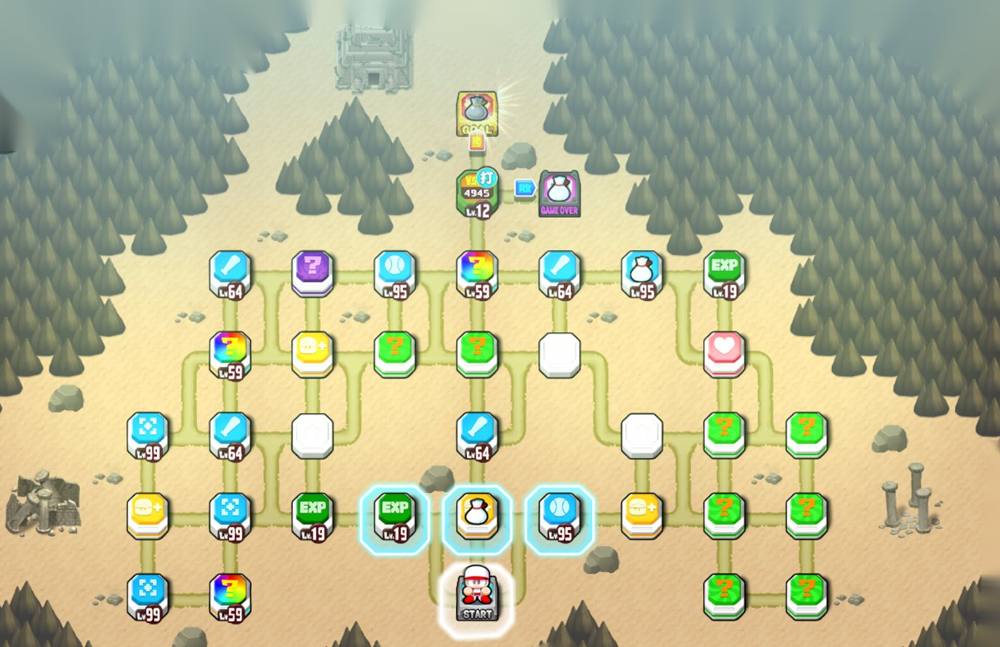
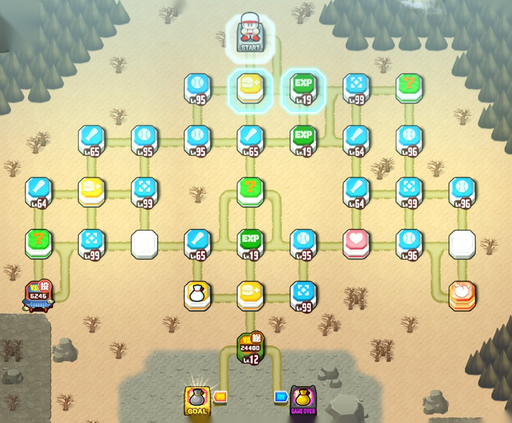
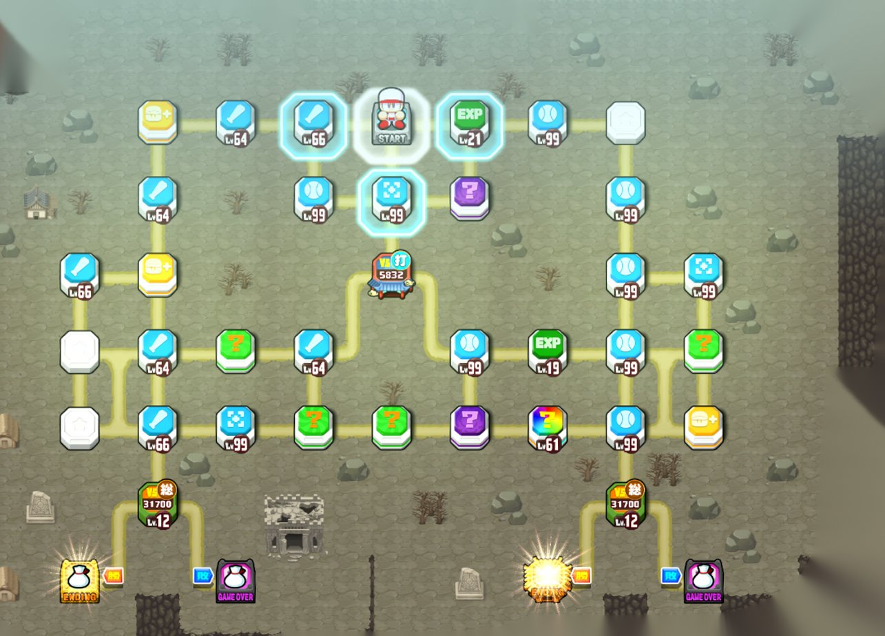

パワクエ 西球記
⑲道中3 周回
主にドロップするアイテム
西球記専用アイテムが非常にドロップしやすいです。
祈願もあるので、専用アイテムを祈願して上位のスキルを狙う事も出来ます。
コーチ人数+3以上の契約書も比較的狙いやすいため、周回を始めるならまずはこのクエストをオススメします。
周回記録
※らんまコラボ期間中の記録なのでコラボ契約書のドロップが含まれます
周回記録 35周分 (うち、エリア2終了2回)（11/24時点）から集計しています。
総合練習の攻略本・秘伝書や○○の巻物など、有用性がないアイテムを記録対象外のアイテムとしています。
道中の契約書は、神前試合マスで獲得したものも含みます。
35周合計 (うち、エリア2終了2回)
| アイテム | 金 | 銀 | 銅 | 合計 |
|---|---|---|---|---|
| 特能ノ書 | 4 | 13 | 12 | 29 |
| 金ノ書 | 5 | 17 | 7 | 29 |
| 呼び寄せの香 | 2 | 7 | 1 | 10 |
| 空白ノ書 | 1 | 3 | 3 | 7 |
| 呼応ノ書 | 3 | 2 | 1 | 6 |
| 投訓ノ書 | 1 | 2 | - | 3 |
| 袋ノ書 | - | 1 | 2 | 3 |
| 幸運の金丹 | 1 | 1 | - | 2 |
| 野訓ノ書 | - | 2 | - | 2 |
| 巨大リュック+ | 1 | 5 | - | 6 |
| 交渉の指輪 | - | - | 1 | 1 |
| 契約書 | 9 | 18 | 140 | 167 |
優秀なスキルが付いたアイテム
| アイテム | 付いたスキル |
|---|---|
呼び寄せの香（銀） 1周目エリア1ボス | 契約書+2 初期強化2 パワーカード強化2 |
特能ノ書（金） 4周目エリア1ボス | 修練の術 特能 5カード特殊能力 パワー特訓人数+2 |
呼び寄せの香（銀） 4周目エリア2ボス | 契約書+2 守備力カード強化2 スカウト率UP1 |
金ノ書（銀） 10周目エリア2ボス | 回復の術 金 野手特訓マス強化3 特能進化+3（祈願） |
呼応ノ書（金） 20周目エリア1ボス | 呼応の術 契約書+1 交渉術1 |
呼応ノ書（銀） 22周目エリア1ボス | 呼応の術 交渉術3（祈願） 契約書+2 |
幸運の金丹（金） 23周目エリア1ボス | 祈願率UP3 制球カード強化1 球速カード強化1 |
金ノ書（銅） 30周目エリア1 | 回復の術 金 総合練マス強化2 特能進化+3 |
コーチ人数+3以上が付いた契約書
| アイテム | 付いたスキル |
|---|---|
[恋のキューピッド]天音姫恋（銅） 3周目エリア1 | コーチ人数+3 走力特訓1 捕球特訓1 |
早乙女乱馬（銅） 8周目エリア1 | コーチ人数+3 上限突破2（祈願） |
[二刀流]十六夜瑠菜（銅） 9周目エリア2 | コーチ人数+3 熟練の投球1 総合練習1（祈願） |
早乙女乱馬（銀） 13周目エリア1ボス | コーチ人数+3 制球特訓1 |
[たゆたう水月]清江留萌（銅） 24周目エリア2 | コーチ人数+3 熟練の守備1 |
[白轟]北斗八雲（銅） 28周目エリア2 | コーチ人数+4 上限突破1（祈願） |
エリア毎の詳細はコチラをタップ
エリア1
エリア1道中
| アイテム | 金 | 銀 | 銅 | 合計 |
|---|---|---|---|---|
| 特能ノ書 | - | - | 12 | 12 |
| 金ノ書 | - | 2 | 7 | 9 |
| 空白ノ書 | - | - | 3 | 3 |
| 袋ノ書 | - | - | 2 | 2 |
| 呼び寄せの香 | - | - | 1 | 1 |
| 呼応ノ書 | - | - | 1 | 1 |
| 契約書 | 1 | 1 | 25 | 27 |
エリア1ボス
| アイテム | 金 | 銀 | 銅 | 合計 |
|---|---|---|---|---|
| 金ノ書 | 3 | 6 | - | 9 |
| 特能ノ書 | 3 | 4 | - | 7 |
| 呼び寄せの香 | 2 | 4 | - | 6 |
| 呼応ノ書 | 2 | 2 | - | 4 |
| 空白ノ書 | 1 | 2 | - | 3 |
| 幸運の金丹 | 1 | 1 | - | 2 |
| 袋ノ書 | - | 1 | - | 1 |
| 野訓ノ書 | - | 1 | - | 1 |
| 早乙女乱馬の契約書 | - | 1 | - | 1 |
| 響良牙の契約書 | - | 1 | - | 1 |
コーチ人数+3・+4が付いた契約書
| アイテム | 付いたスキル |
|---|---|
[恋のキューピッド]天音姫恋（銅） 3周目エリア1 | コーチ人数+3 走力特訓1 捕球特訓1 |
早乙女乱馬（銅） 8周目エリア1 | コーチ人数+3 上限突破2（祈願） |
早乙女乱馬（銀） 13周目エリア1ボス | コーチ人数+3 制球特訓1 |
エリア2
エリア2道中
| アイテム | 金 | 銀 | 銅 | 合計 |
|---|---|---|---|---|
| 契約書 | - | 1 | 59 | 60 |
エリア2ボス
| アイテム | 金 | 銀 | 銅 | 合計 |
|---|---|---|---|---|
| 金ノ書 | 2 | 9 | - | 11 |
| 特能ノ書 | 1 | 9 | - | 10 |
| 呼び寄せの香 | - | 3 | - | 3 |
| 投訓ノ書 | 1 | 2 | - | 3 |
| 呼応ノ書 | 1 | - | - | 1 |
| 空白ノ書 | - | 1 | - | 1 |
| 野訓ノ書 | - | 1 | - | 1 |
| 響良牙の契約書 | 1 | 1 | - | 2 |
| シャンプーの契約書 | - | 1 | - | 1 |
| 天道あかねの契約書 | 1 | - | - | 1 |
| 諏訪野聖人の契約書 | - | 1 | - | 1 |
コーチ人数+3・+4が付いた契約書
| アイテム | 付いたスキル |
|---|---|
[二刀流]十六夜瑠菜（銅） 9周目エリア2 | コーチ人数+3 熟練の投球1 総合練習1（祈願） |
[たゆたう水月]清江留萌（銅） 24周目エリア2 | コーチ人数+3 熟練の守備1 |
[白轟]北斗八雲（銅） 28周目エリア2 | コーチ人数+4 上限突破1（祈願） |
エリア3
エリア3道中
| アイテム | 金 | 銀 | 銅 | 合計 |
|---|---|---|---|---|
| 交渉の指輪 | - | - | 1 | 1 |
| 契約書 | 3 | 5 | 56 | 64 |
エリア3ボス
| アイテム | 金 | 銀 | 銅 | 合計 |
|---|---|---|---|---|
| 巨大リュック+ | 1 | 5 | - | 6 |
| 小掘灯花の契約書 | - | 3 | - | 3 |
| シャンプーの契約書 | - | 1 | - | 1 |
| 伍歩倫人の契約書 | 1 | - | - | 1 |
| 堂江竜河の契約書 | - | 1 | - | 1 |
| 天道あかねの契約書 | 1 | - | - | 1 |
| 星井スバルの契約書 | 1 | - | - | 1 |
| 道満里沙の契約書 | - | 1 | - | 1 |
| 記録対象外のアイテム | - | - | - | 1 |
| ボスドロップなし（祈願） | - | - | - | 17 |
祈願の記録
14回中、成功7回・失敗7回。
| アイテム | 結果 | 付いたスキル |
|---|---|---|
| 呼び寄せの香 | 失敗 | - |
| 早乙女乱馬 | 成功 | 上限突破2 |
| [二刀流]十六夜瑠菜 | 成功 | 総合練習1 |
| 金ノ書 | 成功 | 特能進化+3 |
| 早乙女乱馬 | 失敗 | - |
| 投訓ノ書 | 失敗 | - |
| 特能ノ書 | 成功 | スタミナ特訓人数+1 |
| 金ノ書 | 失敗 | - |
| 呼応ノ書 | 成功 | 交渉術3 |
| 幸運の金丹 | 失敗 | - |
| [たゆたう水月]清江留萌 | 失敗 | - |
| [白轟]北斗八雲 | 成功 | 上限突破1 |
| 金ノ書 | 失敗 | - |
| 野訓ノ書 | 成功 | 肩力特訓人数+1 |
エリア1

エリア2

エリア3

西球記の攻略ページ
 重要アイテム一覧※11/25更新!
重要アイテム一覧※11/25更新!
 神前試合まとめ※11/19更新!38校の進化対象・
神前試合まとめ※11/19更新!38校の進化対象・ おすすめ契約書&コーチ+4厳選解説※11/24更新!狙い方と
おすすめ契約書&コーチ+4厳選解説※11/24更新!狙い方と ミッション報酬西球記の105件を
ミッション報酬西球記の105件を西球記のクエスト・周回ページ


西球記の攻略（トップ）に戻る